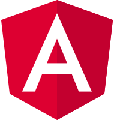

|
|
Su di me
Sono Bianconi Fabio, classe 95.Vivo in un paese nella provincia di Verona, la cittá di Romeo e Giulietta, dei dolci e sede del vino Valpolicella. Vivendo in campagna la mia infanzia è stata soprattutto all'aria aperta nei campi di olivi e vigneti. Il computer nella nostra vita di famiglia arrivò tardi ma subito si accese la curiositá in questo creativo strumento
Competenze
Ho esperienza nel mondo del lavoro da quasi 8 anni di cui 7 all'interno del mondo ITAttraverso il lavoro e per mio desiderio ho acquisito competenze su vari fronti dell'informatica
Frontend
Frontend
Ovvero tutto quello che rende un applicazione o un sito bello da vedere e facile da usareEsempi di strumenti, linguaggi e framework che conosco
HTML
Javascript

Angular
Vue
Backend
Backend
La logica e le prestazioni sono tutte nell'insieme del backendEsempi di linguaggi di programmazione che utilizzo spesso
C#
php
C++
Java
Database
Database
Ovvero la memoria e la banca dati di un'applicazioneAmpia conoscenza del linguaggio SQL e utilizzo nei DBMS più conosciuti
Microsoft SQL Server Management
MySQL / SQLAdmin
Altro
Altro
Ulteriori esempi di competenze acquisiteIBM 3270
Cobol
Android
Formazione scolastica
Ho frequentato l'ITIS G.Marconi di Verona con indirizzo informatica conseguendo il diploma di perito informatico nel 2014 con esito 82/100 Durante le scuole superiori ho partecipato a stimolanti eventi come le Olimpiadi di statistica e la Gara di programmazione della Macchina di Turing e collaborato a vari progetti scolastici utilizzati poi nell'istitutoLingua inglese
Le mie capacità di espressione orale e lettura nella lingua inglese sono buone,sufficienti quelle di scrittura.
Dal 2020 sto frequentando un corso settimanale individuale
con un insegnante per migliorare il mio inglese,
tuttavia non posso negare di avere un accento ancora un po' maccheronico
Interessi extra professionali

Scout
Scout
Pratico scout con l'associazione laica del CNGEI dal 2009. Attraverso lo scautismo ho imparato a relazionarmi sia con le singole persone sia con grandi gruppi, a prendermi responsabilità e superare con serenità imprevisti e difficoltà.Ho partecipato ad eventi nazionali come diretto responsabile educatore ed eventi internazionali come supporto logistico.
Ho conseguito il riconoscimento Wood Badge cioé ho completato un percorso di formazione pedagogico riconosciuto dall'organizzazione mondiale del movimento scout
Teatro
Teatro
Ho partecipato a corsi teatrali che hanno migliorato la mie capacità di public speaking verso una grande plateaCampane
Campane
Fin da giovane suono le campane a sistema veronese, una curiosa passione che volevo condividere quiContatti
Perché mi firmo whiteoni?La radice white è intuibile dal mio cognome, se qualcosa é scritto in inglese ha stile.
Ma perché oni? ha forse a che fare con figure mitologiche del folklore nipponico?
E invece no, si tratta solamente della parte finale del cognome.
Per qualsiasi interesse, contattatemi liberamente nei vari social
Grazie dell'interesse